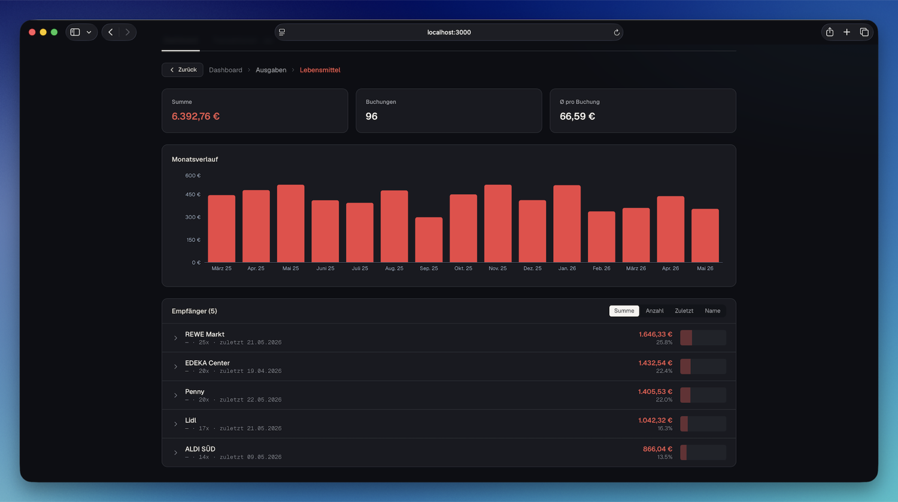

Auswertung
Drill-down bis zur einzelnen Buchung
Zeitraum-Filter, Vorjahresvergleich, Monats- und Kategorie-Charts. Klick dich von der Kategorie über den Empfänger bis zur einzelnen Buchung — mit klickbaren Breadcrumbs zurück.
